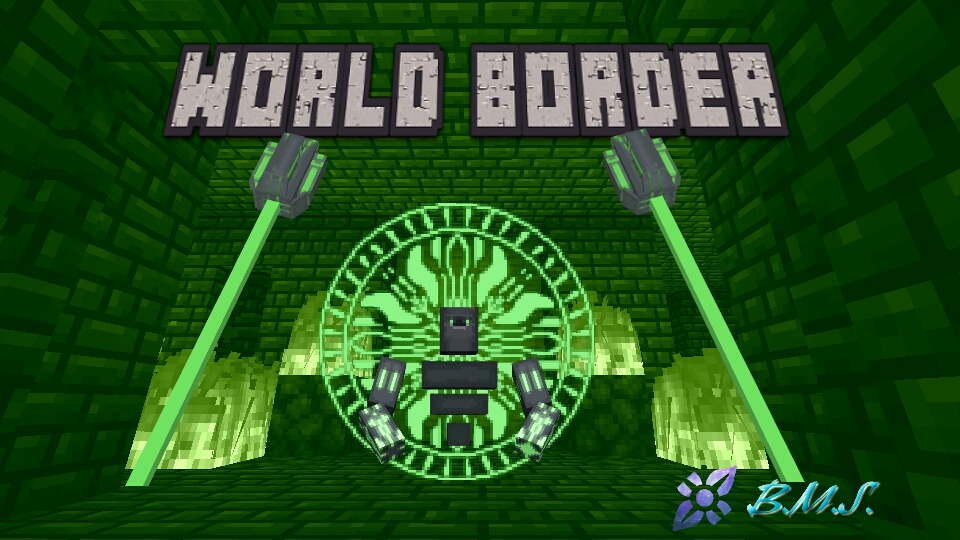
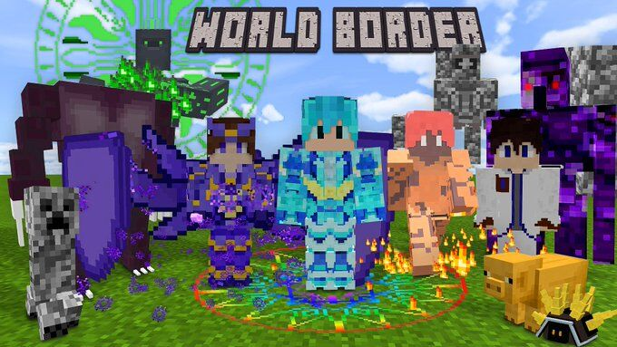
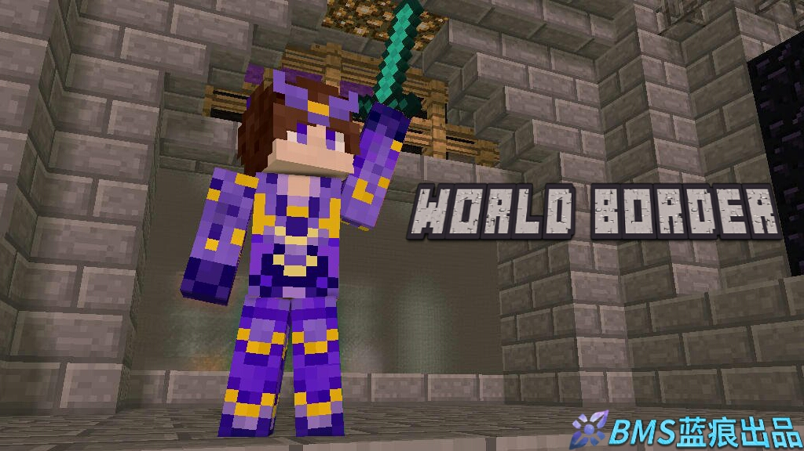
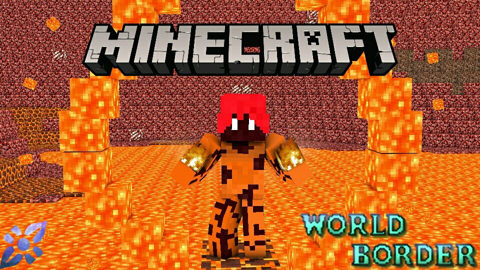

- 
- 
- 
- 

| Addon版本: | V0.2.0 |
| 游戏版本支持 | BE 1.14+ |
| 版本状态 | 第二轮内测版 |
| 作者: | aa剑侠 |
玩法介绍
[警告][本Addon兼容性非常差，容易和别的MOD冲突。如果出现冲突bug，作者不负责。]
具体内容请看游戏指南。
[基础功能]
[生存玩法]
[创造玩法]
[PVP玩法]
[RPG玩法]
还有更多的功能请自行探索。
更新日志
V0.2.0
● 加入 起源王-重制版本 ● 为boss增加新的血条 ● 修改蓝条等级同时显示 ● 增加进游戏的ppt ● 增加BOSS:Lv.75 远古石像 ● 加入交通工具-喷气背包 ● 加入第一章剧情 ● 增加组队系统和领地系统 ● 增加魔能镐和魔能斧 ● 修bug: ● 修复传送列表，粒子禁用列表无法选择的bug ● 修复焚烧法杖无法合成的bug ● 修复传送门吞家的bug ● 修复蓝量无上限的bug ● 调整: ● 去除闪电法杖的开场召唤闪电 ● 加强焚烧法杖的伤害 ● BOSS空间现在坐标固定，并且回去时会在0-x-0左右的位置 ● 去除升级台爆炸破坏方块 ● 嗜血剑现在回血有cd了 ● 勇者之心的血量增加改为增加伤害吸收 ● 修复不能开坐标显示的bug ● 加入远古石像BOSS并加入BOSS空间 ● 加入回收站，可以把不需要的物品转化成随机矿物